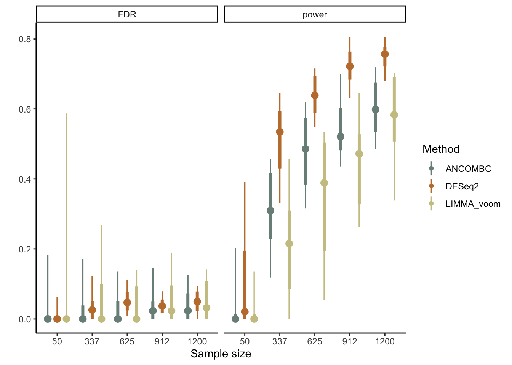

To run a power analysis, we need to define datasets that have known ground
truth. Then, we can run any differential abundance methods we want and see how
many of the true associations are recovered (and how many nulls are falsely
rejected). To this end, we’ll remove associations from 16 of the original 24
genera, just like we removed group interactions in our spline fits above. We’ll
choose to remove the 16 that have the weakest associations in the original data.
This is helpful because, even if we use bmi_group in our formula, if in
reality there is no (or very weak) effect, then even if our simulator considers
it as a true signal, the difference may be hard to detect. Eventually, our
package will include functions for modifying these effects directly; at this
point, though, we can only indirectly modify parameters by re-estimating them
with new formulas.
nulls <- differential_analysis(atlas, "LIMMA_voom") |>
rownames() |>
tail(16)
null_fmla <- list(mu = ~log_depth, sigma = ~log_depth, nu = ~1)
sim <- sim |>
mutate(any_of(nulls), link = null_fmla) |>
estimate(nu = 0.01, mstop = 1000)Now that we have ground truth associations, we’ll evaluate LIMMA-voom for differential analysis. We consider sample sizes ranging from 50 to 1200, and we simulate 10 datasets for each sample size.
config <- expand.grid(
sample_size = floor(seq(50, 1200, length.out = 5)),
n_rep = 1:10
) |>
mutate(run = as.character(row_number()))
results <- list()
for (i in seq_len(nrow(config))) {
atlas_ <- sample_n(sim, config$sample_size[i])
results[[i]] <- differential_analysis(atlas_, "LIMMA_voom") |>
da_metrics(nulls, level = 0.3)
print(glue("{i}/{nrow(config)}"))
}## 1/50
## 2/50
## 3/50
## 4/50
## 5/50
## 6/50
## 7/50
## 8/50
## 9/50
## 10/50
## 11/50
## 12/50
## 13/50
## 14/50
## 15/50
## 16/50
## 17/50
## 18/50
## 19/50
## 20/50
## 21/50
## 22/50
## 23/50
## 24/50
## 25/50
## 26/50
## 27/50
## 28/50
## 29/50
## 30/50
## 31/50
## 32/50
## 33/50
## 34/50
## 35/50
## 36/50
## 37/50
## 38/50
## 39/50
## 40/50
## 41/50
## 42/50
## 43/50
## 44/50
## 45/50
## 46/50
## 47/50
## 48/50
## 49/50
## 50/50Exercise: Visualize the results. How would you interpret the results of the power analysis? Based on your earlier critique of the simulator, do you think the estimated power here is conservative, liberal, or about right?
Solution: We’ll use the stat_pointinterval function from the ggdist package to
visualize the range of empirical power estimates across sample sizes. We can see
that the average false discovery proportion is always controlled below 0.3,
though the variance in this proportion can be quite high. We can also see that
we would have quite good power with \(n \geq 625\) samples, but the worst case
scenarios can be quite poor for anything with fewer samples.
bind_rows(results, .id = "run") |>
left_join(config) |>
ggplot() +
stat_pointinterval(aes(factor(sample_size), value)) +
facet_wrap(~metric, scales = "free")
We expect that this result is somewhat conservative. This is because the original data have more symmetric distributions than our simulation, so limma’s transformation to normality is likely easier to accomplish than in our more highly skewed data.
## R version 4.4.0 (2024-04-24)
## Platform: aarch64-apple-darwin20
## Running under: macOS Ventura 13.4
##
## Matrix products: default
## BLAS: /Library/Frameworks/R.framework/Versions/4.4-arm64/Resources/lib/libRblas.0.dylib
## LAPACK: /Library/Frameworks/R.framework/Versions/4.4-arm64/Resources/lib/libRlapack.dylib; LAPACK version 3.12.0
##
## locale:
## [1] en_US.UTF-8/en_US.UTF-8/en_US.UTF-8/C/en_US.UTF-8/en_US.UTF-8
##
## time zone: America/Los_Angeles
## tzcode source: internal
##
## attached base packages:
## [1] splines parallel stats4 stats graphics grDevices utils datasets methods base
##
## other attached packages:
## [1] TreeSummarizedExperiment_2.12.0 Biostrings_2.72.1 XVector_0.44.0 SingleCellExperiment_1.26.0 scDesigner_0.0.0.9000 purrr_1.0.2
## [7] MIGsim_0.0.0.9000 tidyr_1.3.1 tibble_3.2.1 scico_1.5.0 pwr_1.3-0 patchwork_1.2.0
## [13] mutoss_0.1-13 mvtnorm_1.2-5 mixOmics_6.28.0 lattice_0.22-6 MASS_7.3-60.2 glue_1.7.0
## [19] ggplot2_3.5.1 ggdist_3.3.2 gamboostLSS_2.0-7 mboost_2.9-10 stabs_0.6-4 forcats_1.0.0
## [25] dplyr_1.1.4 SummarizedExperiment_1.34.0 Biobase_2.64.0 GenomicRanges_1.56.0 GenomeInfoDb_1.40.0 IRanges_2.38.0
## [31] S4Vectors_0.42.0 BiocGenerics_0.50.0 MatrixGenerics_1.16.0 matrixStats_1.3.0 SpiecEasi_1.1.3 CovTools_0.5.4
##
## loaded via a namespace (and not attached):
## [1] minpack.lm_1.2-4 rpart_4.1.23 lifecycle_1.0.4 Rdpack_2.6 edgeR_4.2.0 doParallel_1.0.17 insight_0.20.1 magrittr_2.0.3
## [9] limma_3.60.2 sass_0.4.9 rmarkdown_2.27 jquerylib_0.1.4 yaml_2.3.9 plotrix_3.8-4 RColorBrewer_1.1-3 ADGofTest_0.3
## [17] multcomp_1.4-25 abind_1.4-5 zlibbioc_1.50.0 expm_0.999-9 quadprog_1.5-8 pspline_1.0-20 kde1d_1.0.7 yulab.utils_0.1.4
## [25] rgl_1.3.1 pracma_2.4.4 TH.data_1.1-2 sandwich_3.1-0 GenomeInfoDbData_1.2.12 ggrepel_0.9.5 tidytree_0.4.6 ellipse_0.5.0
## [33] RSpectra_0.16-1 codetools_0.2-20 DelayedArray_0.30.1 shapes_1.2.7 tidyselect_1.2.1 shape_1.4.6.1 farver_2.1.2 UCSC.utils_1.0.0
## [41] randtoolbox_2.0.4 base64enc_0.1-3 jsonlite_1.8.8 multtest_2.60.0 Formula_1.2-5 survival_3.7-0 iterators_1.0.14 foreach_1.5.2
## [49] tools_4.4.0 progress_1.2.3 treeio_1.28.0 Rcpp_1.0.12 rARPACK_0.11-0 gridExtra_2.3 SparseArray_1.4.8 xfun_0.45
## [57] distributional_0.4.0 withr_3.0.0 numDeriv_2016.8-1.1 fastmap_1.2.0 fansi_1.0.6 digest_0.6.36 R6_2.5.1 colorspace_2.1-0
## [65] inum_1.0-5 copula_1.1-3 flare_1.7.0.1 utf8_1.2.4 generics_0.1.3 corpcor_1.6.10 prettyunits_1.2.0 pulsar_0.3.11
## [73] httr_1.4.7 htmlwidgets_1.6.4 S4Arrays_1.4.1 scatterplot3d_0.3-44 rngWELL_0.10-9 pkgconfig_2.0.3 geigen_2.3 gtable_0.3.5
## [81] pcaPP_2.0-4 htmltools_0.5.8.1 bookdown_0.39.1 scales_1.3.0 SHT_0.1.8 knitr_1.47 rstudioapi_0.16.0 reshape2_1.4.4
## [89] nlme_3.1-164 cachem_1.1.0 zoo_1.8-12 stringr_1.5.1 libcoin_1.0-10 pillar_1.9.0 grid_4.4.0 vctrs_0.6.5
## [97] VGAM_1.1-11 huge_1.3.5 gamlss.dist_6.1-1 evaluate_0.24.0 cli_3.6.3 locfit_1.5-9.9 compiler_4.4.0 rlang_1.1.4
## [105] crayon_1.5.3 labeling_0.4.3 fs_1.6.4 plyr_1.8.9 stringi_1.8.4 BiocParallel_1.38.0 nnls_1.5 assertthat_0.2.1
## [113] rvinecopulib_0.6.3.1.1 munsell_0.5.1 gsl_2.1-8 lazyeval_0.2.2 glmnet_4.1-8 Matrix_1.7-0 hms_1.1.3 stabledist_0.7-1
## [121] statmod_1.5.0 highr_0.11 rbibutils_2.2.16 memoise_2.0.1 partykit_1.2-20 igraph_2.0.3 bslib_0.7.0.9000 ape_5.8